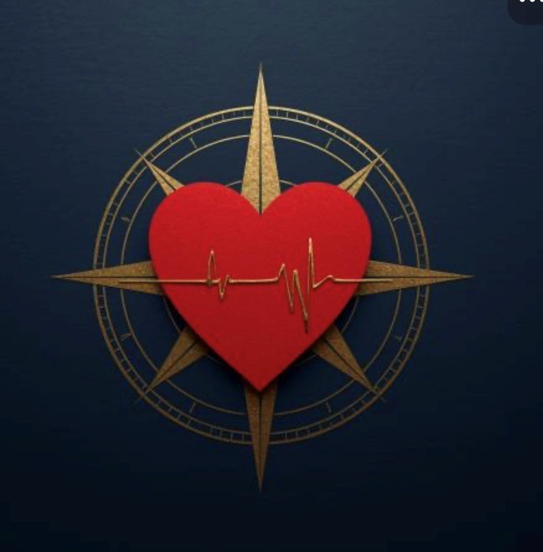

The 30-second pitch is the team's shared starting point. Memorize the four anchor phrases — the rest fills itself in.
Every city has a pulse — energy that builds around places in real time.
And nobody's measuring it.
Yelp captures reputation. Instagram captures attention. Google captures intent. None of them tell you what's actually happening right now.
That's Pulse.
We're the momentum layer for cities — surfacing what's accelerating, neighborhood by neighborhood, in real time.
Reputation is static. Momentum is dynamic.
And with the World Cup landing in Dallas this summer, momentum is the whole game.
Six artifacts ground the Pulse Dallas launch. Each is testable — field research is designed to confirm or disprove the hypotheses inside, not to validate them by default.
Who Pulse serves, and how the team talks about it. Both feed directly into investor materials. Both are testable — every claim should be confirmed or revised by field research.
The materials shaped for investor conversations. Currently raising a $175k seed bridge to capture the World Cup density window.
This hub is gated and the materials within are confidential. Every team member, contractor, and advisor signs the Pulse confidentiality agreement before access. The agreement is Texas-governed (forming jurisdiction) with Dallas County venue, and it incorporates current Texas Uniform Trade Secrets Act and federal Defend Trade Secrets Act requirements.
Elegance with edge — Roman inscription weight in the wordmark, near-black depth as the canvas, gold as the accent that signals heat, and a deep cool red as the brand's pulse. Sharper edges than typical app design; brighter lights than typical luxury.

Score rings transition ice blue → gold → Pulse Red as momentum accumulates. At 116+, the ring pulses.
The window from now to soft launch on July 14 is approximately ten weeks. Field research wraps June 2; product build, vendor onboarding, and launch readiness occupy the remaining six weeks.
Pulse's unit economics, scenario projections, and World Cup window contribution. Available three ways: as a static spreadsheet, as a corrected master file, and as a live interactive model with sliders for investor conversations.
This page is the project's front door. The actual editing of documents happens elsewhere — and that's by design. The hub stays clean and orienting; collaboration happens where collaboration tools are good.
Google Drive or Notion. Update the download links in this page to point to the live versions.
Netlify Drop or push to a GitHub Pages repo. Both are free and produce a shareable URL the team can bookmark. Files in the same folder become downloadable links automatically.